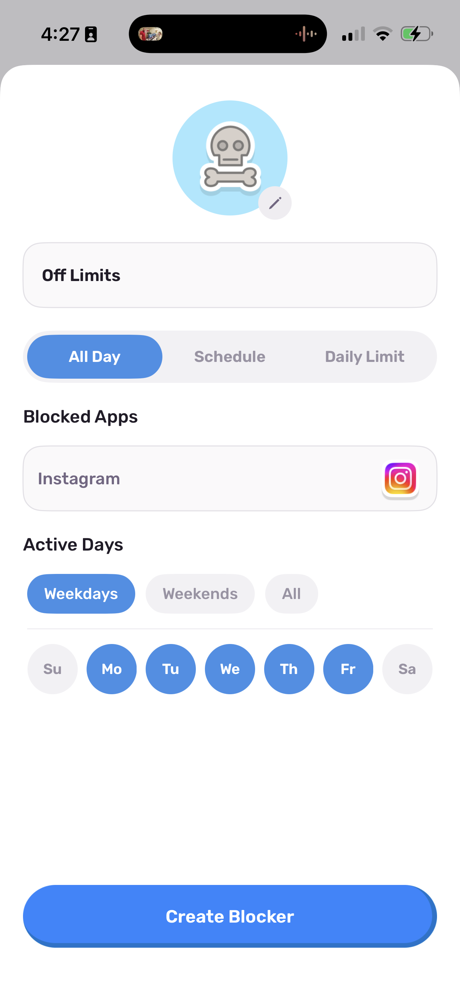
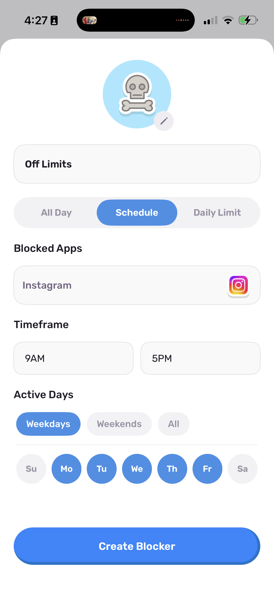
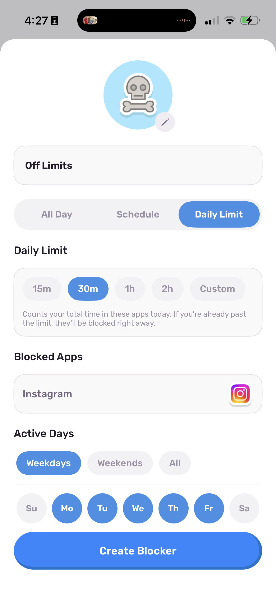

Quick answer
If you use Brainrot, open the Blocking tab, create a rule, select Instagram, then choose All Day, Schedule, or Daily Limit. If you prefer the tools built into your phone, go to Settings > Screen Time > App Limits. Neither method deletes your account.
Blocking Instagram is different from deleting it
Deleting the Instagram app removes it from your phone. Your account, messages, posts, and followers remain on Instagram. You can reinstall the app later or open instagram.com in a browser.
A block is more flexible. It lets you decide when Instagram should be unavailable, then restores access when the rule ends. This works well if you need Instagram sometimes but do not want to open it every time you pick up your phone.
Method 1
Block Instagram with Brainrot
Brainrot has three kinds of blocking rules. You can restrict Instagram for a full day, during certain hours, or after you have used it for a set amount of time. The rule runs through Apple's Screen Time system, so it applies at the operating-system level rather than showing another reminder.
-
Open the Blocking tab
Launch Brainrot and open Blocking from the tab bar.
-
Create a new rule
Choose the option to add a rule, then select Instagram from the list of apps.
-
Choose a rule type
Pick All Day, Schedule, or Daily Limit. Each option can run on the days you select.
-
Create the blocker
Check the selected app, settings, and active days, then tap Create Blocker. Open Instagram once to confirm that the block appears when expected.
Pick the rule that matches your habit
Instagram stays blocked for the entire day on the weekdays or individual days you select.
Set a start and end time. This is useful for work hours, school, dinner, or bedtime.
Choose a time allowance. Brainrot counts today's Instagram use and blocks the app once the allowance is gone.
{kind=link}

{kind=link}

{kind=link}

Block Instagram for one part of the day that regularly disappears into scrolling. A two-hour evening block is easier to evaluate than a rule that changes your entire week at once.
Method 2
Set an Instagram limit with Apple's Screen Time
You can also set a daily limit without downloading another app. Apple's controls are useful when a simple time allowance is enough.
- Open Settings and tap Screen Time.
- Turn on App & Website Activity if it is not already active.
- Tap App Limits, then Add Limit.
- Find Instagram, select it, and tap Next.
- Choose the daily allowance and customize individual days if needed.
Apple maintains the current menu names and instructions in its Screen Time guide.
Which method should you use?
| Method | Best for | Main tradeoff |
|---|---|---|
| Brainrot rules | Full days, recurring time windows, or daily allowances | Requires Brainrot and Screen Time permission |
| Apple App Limit | A fixed daily Instagram allowance | You manage the rule in Settings |
| Delete the app | A clean break from the app icon | Instagram remains available in a browser and can be reinstalled |
| Delete the account | Leaving Instagram rather than managing screen time | Far more permanent than an app block |
What if you open Instagram in Safari?
An app block does not automatically remove every way to reach instagram.com. If the website becomes your fallback, iPhone can restrict a specific URL through Screen Time:
- Open Settings > Screen Time.
- Tap Content & Privacy Restrictions.
- Open App Store, Media, Web & Games, then Web Content.
- Select Limit Adult Websites.
- Under Never Allow, add instagram.com.
See Apple's current content restriction instructions if your menus look different.
Make the rule match the problem
During work or school
Schedule the block for the hours when a quick check usually turns into twenty minutes.
Before bed
Start the rule before you get into bed, not after you have already opened Reels.
For a short reset
Use an all-day rule for a weekend or a few weekdays, then decide what access you actually missed.
Questions people ask before blocking Instagram
Can I block Instagram without deleting my account?
Yes. Brainrot and Apple's Screen Time restrict access to the app on your phone. They do not delete your Instagram account.
Can I block Instagram only at night?
Yes. Create a Schedule rule that starts before bedtime and ends in the morning.
Can I block Reels but keep direct messages?
Brainrot's app-level rule blocks Instagram as a whole. It cannot remove Reels while leaving direct messages available. A shorter Schedule rule may be a better fit if you still need messages.
Does deleting the Instagram app delete my account?
No. Removing the app from an iPhone does not erase the Instagram account. Account deletion is a separate action inside Instagram's account settings.
Can Brainrot block Instagram on Android?
Brainrot is currently available for iPhone. You can join the Android waitlist for updates.